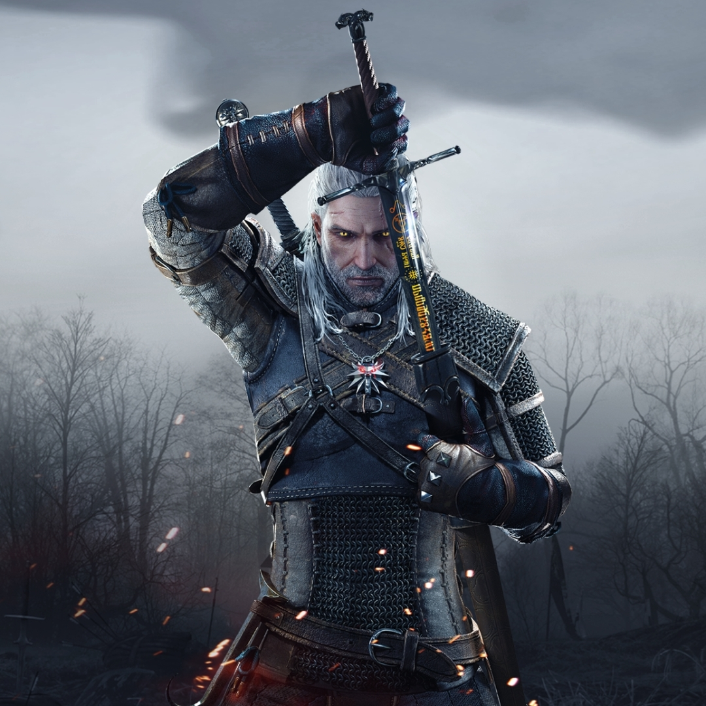

The Witcher game series

The Witcher game series
is a critically acclaimed and popular action role-playing game franchise developed by CD Projekt.
Inspired by the book series of the same name by Polish author Andrzej Sapkowski, the games follow the adventures of Geralt of Rivia,
a monster hunter for hire known as a Witcher, in a dark and immersive fantasy world. The series is known for its morally ambiguous choices,
rich narrative, and complex characters. The games feature a combination of swordplay, magic, and alchemy,
allowing players to engage in epic battles and explore a vast open world filled with mythical creatures,
political intrigue, and compelling storylines.
The Witcher 3: Wild Hunt, the third installment, particularly stands out for its expansive world,
deep storytelling, and numerous accolades, making it one of the most celebrated RPGs of its time.
-
The Witcher (2007):
The first installment introduces players to Geralt of Rivia,
a genetically enhanced monster hunter, as he seeks to regain his lost memories.
Set in a politically turbulent world, Geralt becomes embroiled in a conspiracy involving kings,
sorcerers, and a mysterious organization. Players navigate a gritty and morally complex narrative while battling monsters and making impactful choices.
-
The Witcher 2: Assassins of Kings (2011):
Geralt continues his quest in a more politically charged world, with kings vying for power.
Falsely accused of assassinating a monarch, Geralt seeks to clear his name and uncovers a plot that could plunge the realm into chaos.
The game introduces a branching narrative with decisions significantly affecting the story's direction, leading to multiple possible endings.
-
The Witcher 3: Wild Hunt (2015):
Widely regarded as a masterpiece, The Witcher 3 follows Geralt on his quest to find his adopted daughter,
Ciri, pursued by the otherworldly Wild Hunt. The game features an open-world design with vast landscapes,
intricate quests, and a morally gray storyline.
Players can shape the destiny of the Northern Realms through their choices, and the game received praise for its rich storytelling,
complex characters, and engaging gameplay.
Awards and nominations
The Witcher:
-
Won several awards for its storytelling, including Best Writing and Best Story at the IGN PC Best of 2007 Awards.
-
Received praise for its character development and mature themes.
The Witcher 2: Assassins of Kings:
-
Won multiple awards, including Best RPG at IGN's Best of 2011 Awards.
-
Praised for its branching narrative, complex characters, and improved graphics.
The Witcher 3: Wild Hunt:
-
Dominated The Game Awards 2015, winning Game of the Year, Best Role-Playing Game, Best Narrative, and Best Developer.
-
Received numerous Game of the Year awards from various outlets, including IGN, GameSpot, and BAFTA.
-
Praised for its open-world design, compelling characters, and engaging narrative.
-
Earned over 800 awards and nominations globally, making it one of the most awarded games of its time.